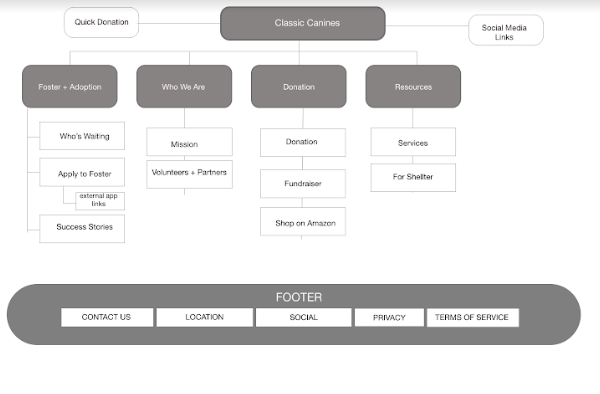
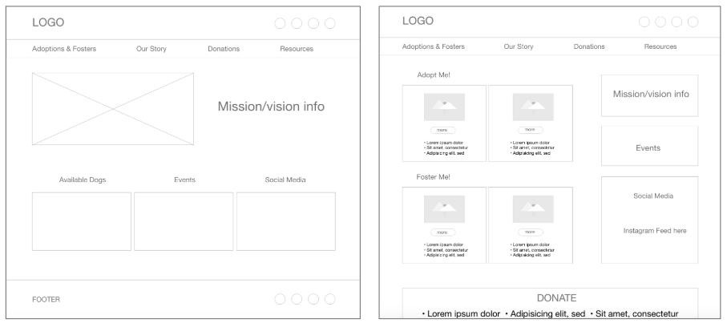
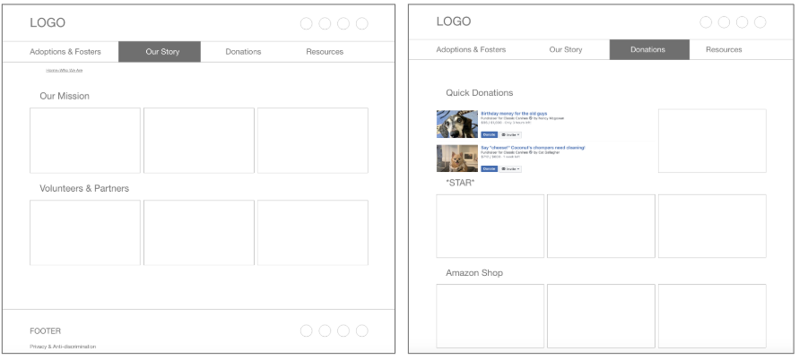
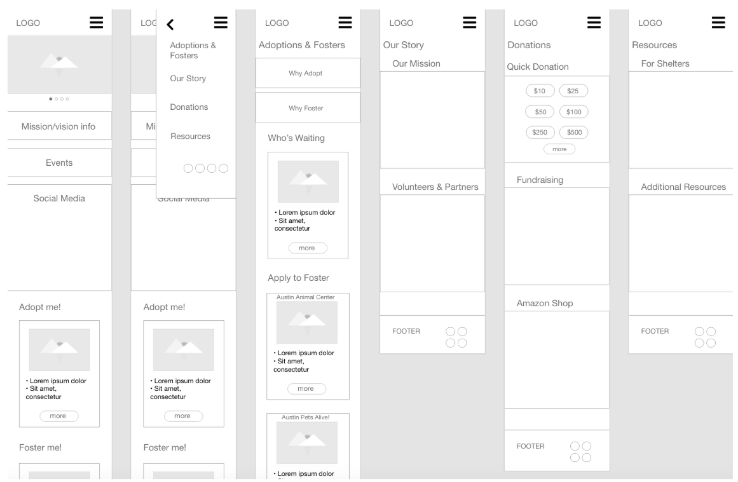
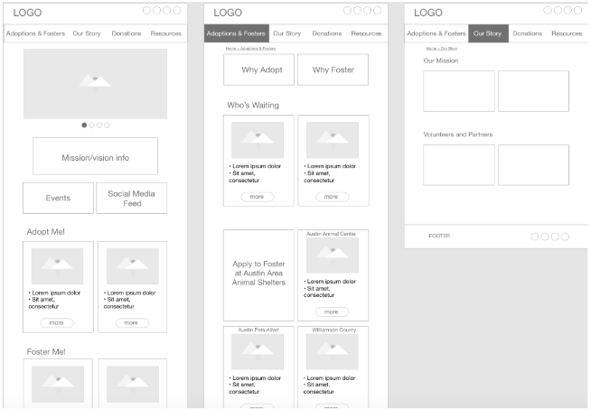
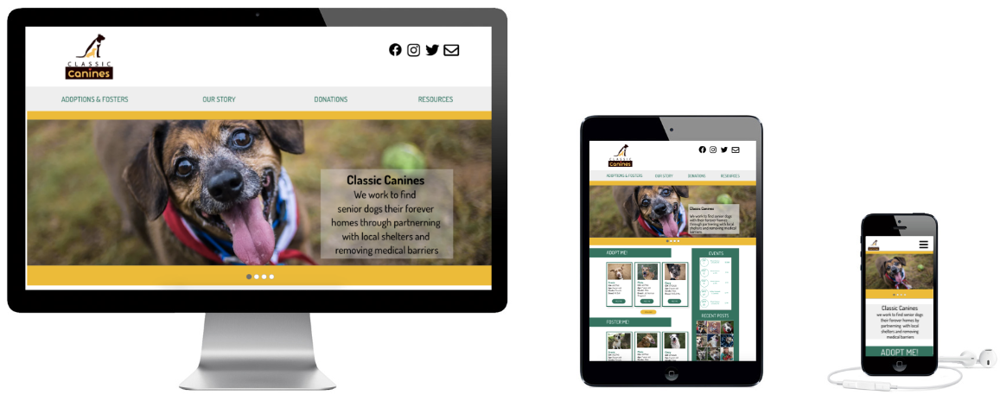
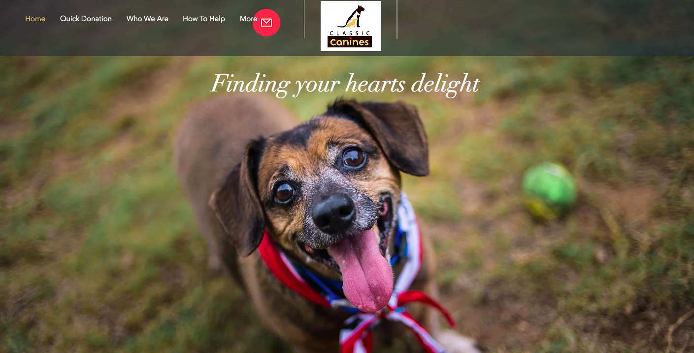
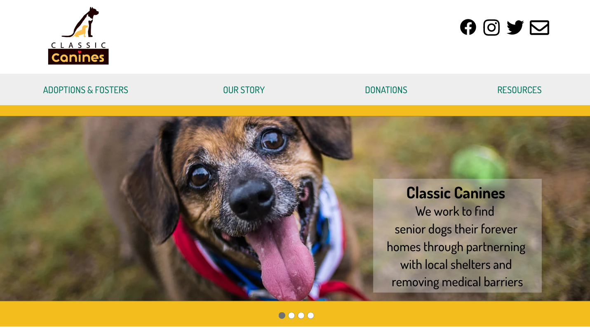

Classic Canines Website Redesign
Problem
We believe there is a multitude of senior dogs in need of homes in our community and that an organization that will support medical, training and special care needs to get them to a point of stability will relieve potential adopters hesitations and get these dogs into homes. We believe there is a lot of missed opportunities for this organization due to the inconsistent and unresponsive website design.
Goal
The goal of this project is to transform the Classic Canines website into a modern, responsive designed website that will allow the nonprofit organization to expand its reach and voice within the community.
Research
Current Website Anlysis

Interview Takeaways
Users:
- The biggest hesitation for adopting senior dogs is the potential medical costs the dog will require
- Senior dogs make great companions
- Known history for the dog is very important
Organization:
- Social media is very important. Most of fostering starts from social media
- Classics provides medical care if needed. But they have to be in foster care
- Canines is an advocacy group we raise money to be able to pay for the vet costs and hopefully we can get them perfect before they get adopted
Seniors are very vulnerable to be given up, as soon as they have a medical condition people don’t want to deal
Data Analysis
 We used several methods to analyze the data we gathered from our surveys, such as: affinity diagram, journey map, empathy map, and card sorting. With this analysis, we were able to create our User Persona
We used several methods to analyze the data we gathered from our surveys, such as: affinity diagram, journey map, empathy map, and card sorting. With this analysis, we were able to create our User Persona
With our card sorting we were able to create a more efficient and streamlined site map 
Wireframes
We wanted to create a responsive design, so we created wifreframes for web, mobile, and tablet
Web


Mobile

Tablet

Hi-Fi Prototype
Using color theory and other UI methods, we created our Style Tile

We made sure to test for Accessibility


Videos of Prototypes
Before
After
Future Considerations
- Ideally we would like to see more integration between the shelters they work with and the Classic Canines site to create a more usable and visual database of all the senior dogs needing homes in the area
- Incorporate social media feeds to live update since they rely on social to bring attention to dogs and events
- Bring more of the external links internal to the site to create a more seamless experience for users instead of redirecting them to a bunch of different sites